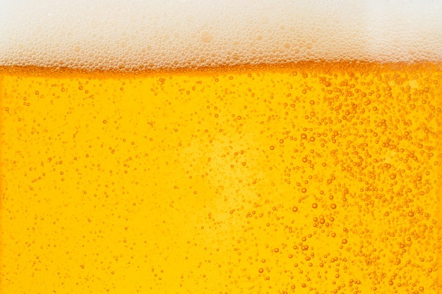

<navbar id="navbar" class="app-navbar no-search">
  <picture>
    
  </picture>
  <div class="navbar-logo">
    <h1><a href="/">BeerFlix</a></h1>
  </div>
  <div class="filter-container">
    <form id="search-form" class="filter-input">
      <input placeholder="search your beer" class="input search" type="text">
      <input placeholder="limit" class="input limit" type="number">
      <button type="submit" class="button search">Search</button>
    </form>
  </div>
  <div class="navbar-icon">
    <i id="navbar-search" class="fas fa-search"></i>
    <i id="navbar-close" class="fas fa-times"></i>
  </div>
</navbar>